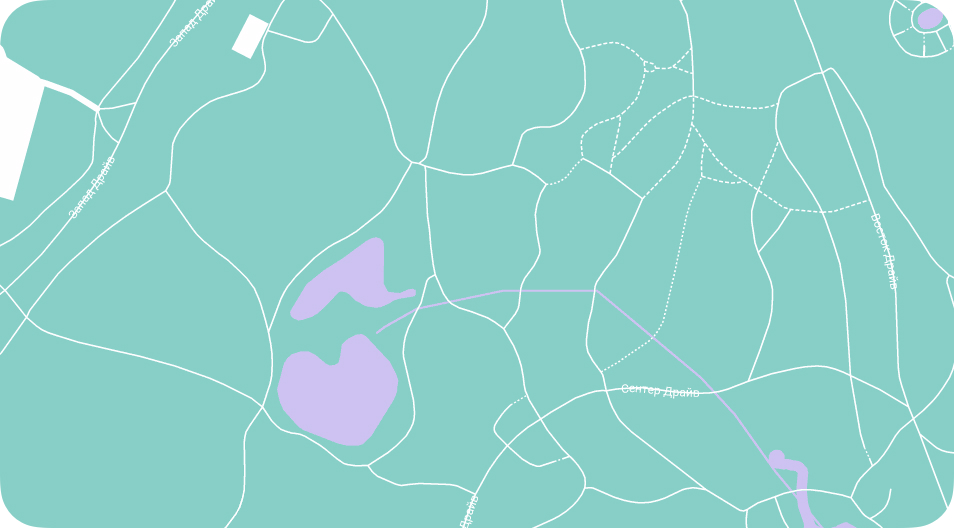

Welcome to Zoo
Care For Any Animals
Larger than urban and open-range zoos, safari parks are areas where tourists can drive their own cars.

Zoo Features
Park where live animals are kept so that people can look at them
Exotic
Urban and open-range zoos, safari parks are areas where tourists can drive their own cars to see non-native wildlife.
Modern
Safari parks are areas where tourists can drive their own cars to see non-native wildlife living in large, enclosed areas.
Popular
Drive their own cars to see non-native wildlife living in large, enclosed areas. These attractions allow the animals.
About
Natural Habitats Of Animals
See non-native wildlife living in large, enclosed areas. These attractions allow the animals more space.
Larger than urban and open-range zoos
Safari parks are areas where tourists
Can drive their own cars
Want to know more?
Learn More
Live Video
Watch Live Cam
Attractions allow the animals more space than the small enclosures of traditional zoos.
Giraffe
Popular zoo animals for kids
Monkey
Most commonly seen
Tiger
One among the wild
Service
Giving Animals More Space
Tourists can drive their own cars to see non-native wildlife living in large, enclosed areas.
Where tourists can drive their own cars to see non-native wildlife living in large, enclosed areas. These attractions allow the animals more space than the small enclosures of traditional zoos.
Zoo Map
Explore Zoo Map
Safari parks are areas where tourists can drive their own cars to see non-native wildlife living in large, enclosed areas.
Zoo Map
Explore Zoo Map
Safari parks are areas where tourists can drive their own cars to see non-native wildlife living in large, enclosed areas.
Zoo Map
Explore Zoo Map
Safari parks are areas where tourists can drive their own cars to see non-native wildlife living in large, enclosed areas.